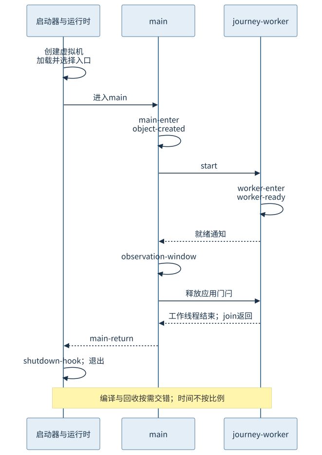

第一篇 · 第 1 章 · Java Virtual Machine（JVM）
JVM 的职责与整体架构
一份 Java 源码经过哪些环节，最终成为处理器执行的指令？先建立运行主线，再逐步拆开其中的机制。
JVM 定义了一台执行类文件的抽象机器。Java 开发工具包（Java Development Kit，JDK）还包含编译器、启动器、标准类库和诊断工具。理解这两个名称的边界，是把源码、运行现象与操作系统联系起来的第一步。
本章以 Java 平台标准版（Java Platform, Standard Edition，Java SE）25 为规范，以锁定版本的 OpenJDK HotSpot 为实现对象。本次观察来自 Homebrew OpenJDK 25.0.5.0.2、macOS AArch64；不是对其他实现、平台或所有调度顺序的实测。窄屏中的图、表和长代码可在各自区域横向滚动。
先看一次正常程序的生命周期
CH01-E01 的 ProgramJourney 读取一份小文本，创建 Payload 对象，把它交给一个平台工作线程，再等待工作线程结束。它还提供最长 60 秒的观察窗口，供后续两章使用诊断工具；默认观察运行不需要制造错误或堆积负载。
// CH01-E01，摘录；完整文件包含退出上限和中断处理。
String text = Files.readString(Path.of(args[0]), StandardCharsets.UTF_8);
Payload payload = new Payload(text);
Thread worker = Thread.ofPlatform().name("journey-worker")
.unstarted(() -> process(payload, ready, release, observationSeconds));
worker.start();源码只有几个动作，却涉及文件系统、对象分配、类加载、线程创建、方法调用与退出。没有一个单独的“Java 执行函数”包办所有工作。下面把这些协作放回不同层次。
1.1 Java 源码、类文件、解释执行与机器码
1.1.1 三种语言层次承载不同信息
源码用类、表达式、异常处理和线程调用描述程序。javac 根据语言规则生成类文件，保存成员、类型描述、符号引用和字节码。字节码规定抽象操作数栈上的行为，不包含“把这个对象放到本机某个固定地址”这样的承诺。处理器最终执行的仍是本机指令；两层指令集之间需要具体运行时完成转换。[S01 §2.1、§2.11]

本例反汇编中，创建 Payload 的位置为：
// 本次 javap 的实际输出片段
115: new #103 // ProgramJourney$Payload
118: dup
119: aload_2
120: invokespecial #105 // Payload.<init>:(Ljava/lang/String;)V
123: astore_3这里的 #103、#105 是这份类文件的常量池索引，不是本机函数地址。new、构造器调用与引用保存也不是一个不可再分的抽象动作。第 4、5、11 章分别解释这些信息的格式、类型状态与分配过程。
1.1.2 同一个方法可能有多种执行形态
解释执行也由处理器执行机器码：处理器执行的是解释器实现字节码语义的代码。即时编译（Just-in-Time Compilation，JIT）则把方法或循环的中间表示转换为专用机器码，后续可以直接进入这些代码。解析、检查、异常处理和运行时辅助仍可能参与，两条路径并非互不相干。
HotSpot 可以根据计数、类型画像与资源条件选择编译；一个方法还可能失去旧优化假设并恢复到其他执行形态。不能把“编译器存在”写成“每个方法必定编译”，也不能要求全部方法依次经过相同层级。本章的短程序没有为触发某种编译结果而反复运行，编译策略在第 16—18 章用专门证据解释。
1.2 JVM、JDK、标准类库与操作系统的职责
1.2.1 启动器把控制交给虚拟机
编译器解决“源码是否满足语言规则、怎样生成产物”；启动器处理启动方式、选项与入口；虚拟机建立运行时并执行类文件语义；标准类库提供文件、集合、并发等契约及实现；操作系统提供线程调度、虚拟内存、文件等平台能力。通常一次 java 启动进程承载一个 HotSpot 实例和许多类、线程，不是一份源文件对应一个进程。
| 阶段 | 实现入口 | 职责 |
|---|---|---|
| 本地启动器 | launcher/main.c → JLI_Launch | 整理启动参数，进入启动库 |
| 启动库 | libjli/java.c：JavaMain → InitializeJVM | 准备选项，通过调用接口创建虚拟机 |
| HotSpot 创建 | JNI_CreateJavaVM → Threads::create_vm | 建立线程、内存和基础运行时状态 |
| 应用入口 | LoadMainClass → 本例的 invokeStaticMainWithArgs | 加载并选取适用入口，再调用应用 |
调用接口属于 Java 本地接口（Java Native Interface，JNI）。JDK 25 的启动库还具有实例入口和无参数入口选择分支；本例使用传统的 public static void main(String[])。本章给出职责坐标，第 30 章再深入启动细节，不能用本例入口形态排除版本中其他合法形式。[S03]
1.2.2 本地边界不是“所有代码都变成系统调用”
读取文件时，本例的 Files.readString 在锁定源码中调用 readAllBytes，后者打开字节通道并负责关闭；默认 Unix 文件系统提供者创建文件通道。通道实现经本地分派最终使用 read 等操作系统能力。自定义文件系统提供者可以采用其他实现，因此这条源码路线限定于本例默认文件系统。[S04]
启动平台线程时，Thread.start 进入本地 start0，关联到 HotSpot 的 JVM_StartThread，再创建 JavaThread；本次平台的 os::create_thread 使用 pthread_create。对象分配则由运行时管理的堆支持，快路径可能只移动已有空间中的分配指针，不必每次向系统申请页面。不能把 Java 方法调用、本地函数调用和进入内核当作同一事件。
1.3 虚拟机主要子系统
1.3.1 运行时不是一块没有分工的内存
类加载与连接建立可被使用的类型信息；运行时内存承载对象、栈、元数据和代码；解释器、编译器与辅助函数共同执行行为；线程保存各自的执行上下文；垃圾收集器依据根与引用关系管理对象存活。这些概念的规范模型与 HotSpot 的具体区域并不逐项同名同形。例如规范的方法区不是要求实现必须有一个名字叫“方法区”的连续地址块。

1.3.2 以 Payload 的创建和调用串联协作
执行 new Payload(text) 需要知道目标类型：类型身份、字段和构造器信息必须能被找到并满足相应要求。分配获得对象所需空间，构造器建立字段状态，随后引用被保存并捕获到工作线程的任务中。线程开始后调用 payload.describe()，又要依托接收者、方法信息与当前执行形态。
这解释了为何“类文件只在启动时有用”“有了堆就能执行一切方法”都不成立。共享对象与各线程栈之间存在持有关系；编译代码也需要类型及其他运行时信息。回收器关注可达性而不是变量在源码中排列的位置，本例的线程捕获使 Payload 在使用期间仍可从执行上下文找到。具体持有图和元数据见第 8 章，分配与回收由第三、第五篇继续拆解。
1.4 规范、实现与平台可移植性
1.4.1 哪些必须一致，哪些可以选择
类文件结构、指令的可观察语义、类型与访问约束属于规范要求。对象头布局、解释器组织、编译启发式、回收算法及内存区域具体安排属于实现选择，只要满足相关规范约束。HotSpot 是一个实现对象，不能把它的内部类名或某版优化策略写成所有 JVM 的定义。[S01 §2.13]
本书因此区分三类语句：“规范要求某关系成立”要回到规范；“HotSpot 经某个函数处理”要定位锁定提交；“本次输出出现某阶段”要提供实际运行。源码阅读还需区分路径存在与本次必经路径：优化、替代提供者、启动选项和平台条件都可能选择别的路线。
1.4.2 可移植性有条件
硬件无关的类文件使相同格式能被不同平台实现读取，但运行还需要合适的类文件版本和类库、可用的本地库、允许的模块访问及兼容的环境行为。文件路径、编码、权限、线程调度与资源上限不会因为使用 Java 就消失。
本例明确指定文本编码、不依赖某个固定对象地址；运行说明仍要选择实际工具路径和输入文件。搬移项目后，页面内部链接继续使用相对路径，命令中的本机工具选择则按环境基线调整。“字节码可读”不能替代这些条件。
1.5 从程序启动到退出
1.5.1 一条运行主线及其证据
启动器先创建运行时并选择入口；应用进入后读取文件、创建对象、启动并协调线程；工作完成后，主线程等待工作线程终止并返回；本次正常关闭过程又执行了已登记的关闭钩子。main 返回与“所有 Java 进程都必定立即退出”不是同义表达：仍存活的非守护线程等条件会影响关闭。[S02 §5.2、§5.7；S05]

// CH01-E01，本次实际输出摘录，elapsed_ms 从本类初始化计时
elapsed_ms=41 thread=main stage=main-enter
elapsed_ms=44 thread=main stage=object-created
elapsed_ms=46 thread=journey-worker stage=worker-enter
elapsed_ms=47 thread=journey-worker stage=worker-ready
pid=14223 observation_seconds=0
elapsed_ms=52 thread=main stage=observation-window
elapsed_ms=52 thread=journey-worker stage=worker-return
elapsed_ms=52 thread=main stage=main-return
elapsed_ms=53 thread=journey-shutdown stage=shutdown-hook这些数字是本次记录，不是启动性能指标。相对时钟从本类初始化算起，类加载日志的虚拟机 uptime 又有另一计时原点，不能把二者直接相减得出“加载花了多久”。源码中的 ready 与 release 是两个不同的同步信号：先确认工作线程就绪，再在观察窗口到期时释放它，最后用 join 等待终止。线程 start 和成功观察其终止所建立的顺序依据语言规则，不来自日志恰好按某顺序显示。[S06]
1.5.2 哪些事件可能交错发生
类可以在后续需要时继续加载；线程可以并发执行或等待；对象不断被创建和使用；运行时可能按需编译或回收。它们不是“加载全部类 → 编译全部方法 → 运行 → 一次回收”的单行流水线。本次日志在 ProgramJourney 之后记录了 Payload 及任务相关生成类的加载，足以反驳把整个程序都压成单一启动动作的理解，不能证明所有类只能按这一顺序加载。
关闭钩子也只属于特定关闭流程，本例观察到它不意味着任何外部终止、崩溃或强制结束都保证执行。后续章节分别追踪类的生命周期、内存与对象、方法执行、回收协作、线程语义和故障证据。
运行与观察边界
本轮使用 Maven 最小编译，1 个源文件成功；普通进程设置 -Xms32m -Xmx128m，观察秒数为 0，正常退出 0；另用 javap 反汇编。完整条件、源文件摘要、命令及原始输出见 运行说明与本次记录。程序的标准输出是教学数据，少量中文日志标明生命周期，不把打印开销当作待优化结论。
第 2、3 章复用有界观察窗口采集进程、内存、线程及工具证据。一次普通运行不证明并发算法的所有交错，也不说明某次分配、编译或回收的成本。没有编写测试断言或为了结果“更明显”追加无界负载。
回顾与思考
JVM 让硬件无关的表示获得可执行语义；JDK、类库、HotSpot 与操作系统分工协作。源码、类文件、执行引擎和本机指令之间的边界，决定了我们应该从哪类证据回答问题。
- 为什么一个源文件里的 new 不能直接解释成一次操作系统内存申请？
- 解释执行时，处理器实际执行的是什么代码？
- 本例 main-return 与 shutdown-hook 之间的关系，哪些是本次观察，哪些需要规范依据？
- 为什么换一份本地库可能影响“同一个类文件”的可移植性？
第 2 章补齐处理器与操作系统基础，第 3 章把本章的源码路线和工具证据变成可以复查的工作方法。
来源与证据
- S01：Java SE 25 虚拟机规范第 2 章，§2.1、§2.5—2.6、§2.11—2.13。
- S02：虚拟机规范第 5 章，启动、加载、连接、初始化与终止。
- S03：锁定提交中的 launcher/main.c、libjli/java.c、prims/jni.cpp 与 runtime/threads.cpp；精确符号与路径见证据索引。
- S04：同一提交中的 Files.java、UnixFileSystemProvider.java、FileChannelImpl.java、UnixFileDispatcherImpl.c；以及 Thread.java、JVM_StartThread、JavaThread 和 os_bsd.cpp。
- S05：JDK 25 Thread 文档，线程启动、等待、非守护线程与关闭条件。
- S06：语言规范 §17.4.5；本章只使用 start 与终止观察关系，完整并发推理归第 25 章。